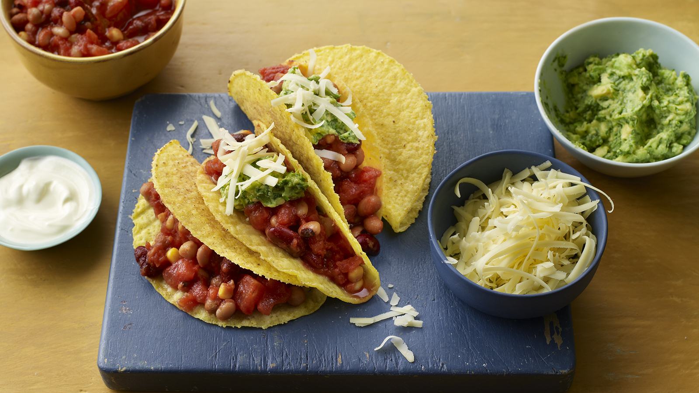

Tacos
Home

Description
This quick and easy recipe is a staple in my life.
It is extremely quick and easy to make, and as someone who cooks for one, this recipe keeps me fed for three days.
This recipe is healthy and delicious and only requires minimal ingredients, which you can customize to your enjoyment.
Ingredients
- Crunchy taco shells
- One onion
- Three garlic cloves
- Ginger
- One pepper
- Mushrooms and any other vegetables you prefer
- One red chilly (optional)
- A portion of salsa
- A tin of mixed beans
- Paprika and seasonings
- Mozzarella cheese
- Oil
Steps
- Dice the onions, peppers, ginger, garlic, chilly and any other vegetables.
- Pre heat the pan and start pre-heating the oven to the temperature recommended for the Taco Shells. Add some oil to the pan before adding in the onions and cook them until they start to soften before adding in some salt.
- Once the onions start to soften, add in the garlic, ginger and chilly.
- Once they have cooked a bit add in the other vegetables and sprinkle in the paprika and other seasonings.
- After the vegetables are fully cooked, add in the tine of beans and simmer for 5 minutes
- Add the tacos into the oven and add the salsa to the pan.
- Simmer the bean and vegetables in the salsa while the tacos heat up in the oven.
- Take the tacos out of the oven and sprinkle some cheese onto the paste prior to adding in a spoon or two of the beans/vegetables mixture
- Eat up!